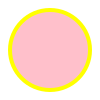

<!--
    SVG <svg>

    É uma marcação, estilo html, mas não é pra textos e sim imagens.
    Possuímos elementos para gerar formas.

    Para entender melhor
    - Imagem rasterizada x Imagem vetorizada

    Benefícios
    - Mais leve
    - Mais detalhada
    - Maior acessibilidade e SEO
    - Pode ser editada via CSS ou atributos

    Desvantagens
    - Pode ser mais complicado de trabalhar
    - Quanto mais complexa a imagem, mais trabalho para o navegador
    - Navegadores mais antigos não possuem suporte a essa tag

    Para fotografias, ainda prefira usar imagens rasterizadas.
    -->

<svg width="100" height="100">
    <rect stroke="yellow" stroke-width="8" width="100%" height="100%" fill="pink" />
</svg>

<!--
    <svg width="100" height="100">
        <circle cx="50" cy="50" r="40" stroke="yellow" stroke-width="4" fill="pink" />
    </svg>
-->



    